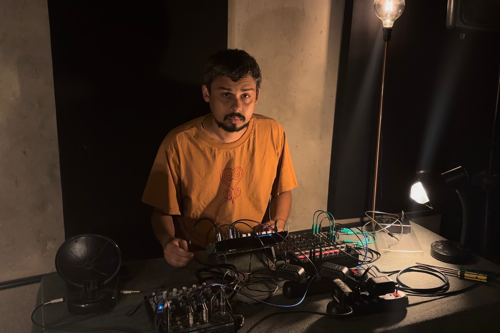
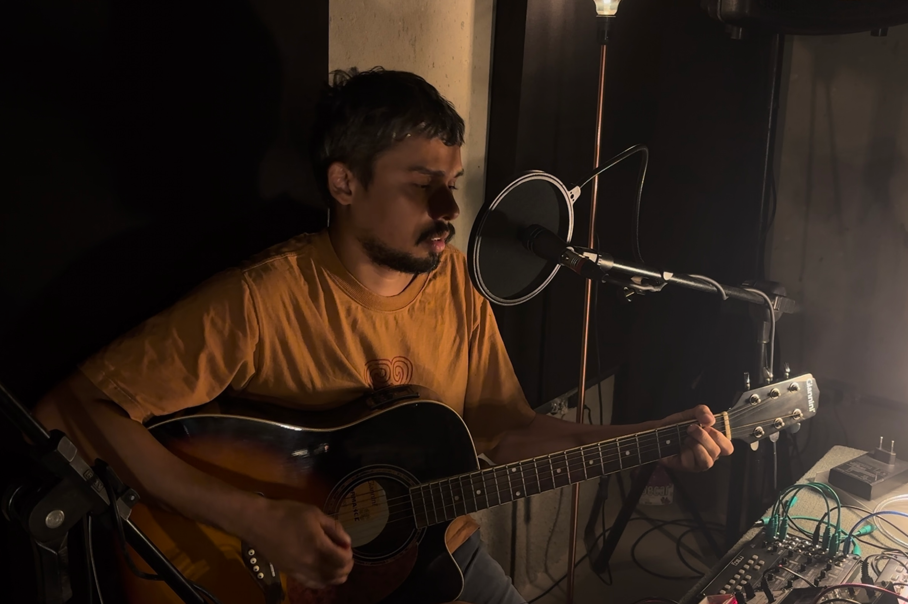
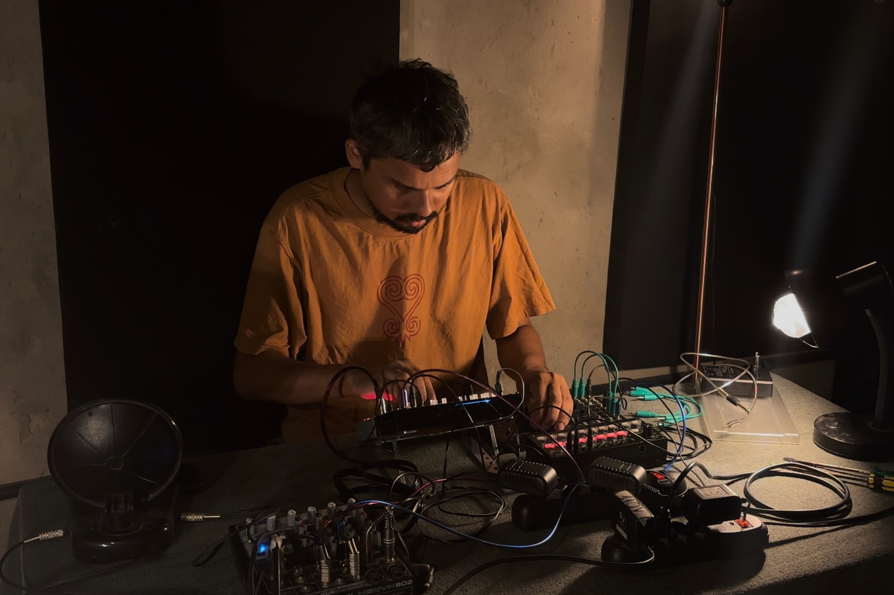

SONA apresenta MIKE DUTRA
CURIOSIDADE EM PROCESSO: TESTAR, TRANSFORMAR, REPETIR

Para Mike Dutra, artista multidisciplinar atuante em Fortaleza (CE), criar é uma prática cotidiana, feita de experimentar, testar, mexer em coisas e ver o que acontece. Cada som, cada objeto, desperta curiosidade: um timbre diferente, um estalo, um barulho que se repete insistentemente. Não há projeto grandioso nem busca por resultados. É um processo de tentativa e erro, de observar, modificar, muitas vezes apenas para entender o que o som pode fazer.
O primeiro contato mais direto com a música aconteceu ainda no colégio, quando começou a ver bandas tocando em pequenas apresentações escolares e de bairro. Essas experiências, no início apenas curiosas, logo se tornaram uma obsessão. A música não era algo presente em casa: seus pais não tinham relação direta com instrumentos nem com prática musical. O interesse surgiu de fora para dentro, primeiro através do violão, depois pelo contato com o rock nacional e, em seguida, pela descoberta de algo que marcaria profundamente sua trajetória: o punk.
O punk trouxe consigo um modo de estar no mundo, uma ética. Uma sensibilidade radical que combinava consciência de classe, anarquia, e a noção de que qualquer pessoa podia montar uma banda e se expressar sem pedir autorização. Foi esse princípio, o “faça-você-mesmo”, que fundou sua relação com a sonoridade. Dos 14 aos 20 e poucos anos, Mike viveu intensamente essa fase, entre ensaios, composições, shows e trocas com outras bandas. A urgência de criar se sobrepunha à ideia de técnica refinada (no punk, era quase impensável viver só de versões). O impulso era sempre o de tocar a própria experiência, traduzir em som a inquietação de estar vivo.
O passo seguinte foi ingressar na faculdade de música, na Universidade Federal do Ceará, onde permaneceu pouco mais de dois anos. O ambiente oferecia estrutura, repertórios consolidados, teoria e técnica, mas também revelava limites. O curso privilegiava uma formação tradicional, centrada na leitura de partituras e nos repertórios históricos, enquanto Mike se sentia atraído por caminhos que escapavam a isso: o ruído, a voz em sua materialidade crua, os sons que não cabiam na lógica da nota musical.
Dentro da universidade, Mike começou a participar do grupo de pesquisa Sonoridades Múltiplas, coordenado pela professora Consiglia Latorre, que desde 2012 oferece oficinas de improvisação livre e experimentação sonora aberta a estudantes de música e comunidade acadêmica. Esse grupo se tornou espaço de experimentação e escuta expandida, um laboratório para testar os limites do som, do gesto e da composição, e contribuiu decisivamente para que Mike percebesse que sua inquietação não se encaixava nos moldes formais do curso. O resultado foi o abandono da graduação em música e uma guinada para o audiovisual, movimento que, embora pareça uma ruptura, foi consequência natural de uma obsessão que o acompanhava desde o punk: o ato de gravar suas criações.
Gravar, para Mike, é um gesto que move toda criação sonora. É ali, na escuta repetida, que as ideias se transformam. E o audiovisual ampliou esse gesto. Ele lembra do impacto ao ouvir, pela primeira vez, uma gravação feita com um microfone shotgun, capaz de capturar sons com uma nitidez que nunca havia experimentado. Até então, suas gravações eram feitas direto na placa de som do computador, no gravador de voz rudimentar do Windows, registros caseiros e não raramente habitados por ruído. O gradual acesso à equipamentos profissionais abriu horizontes técnicos e criativos. O som, de repente, podia ser tratado como matéria-prima, com infinitas possibilidades de detalhe, textura e movimento.
O cinema, como diz Mike, “o engoliu” por inteiro. Trouxe uma perspectiva nova: enquanto na música a unidade mínima é a nota, no audiovisual é o som em si. Qualquer som. O ruído do vento, o estalo de uma madeira, o silêncio carregado de atmosfera. Essa descoberta ressoou com sua formação punk, em que experimentação e subversão são princípios básicos. A partir de então, Mike passou a pensar o som de forma expandida, como material criativo capaz de conduzir narrativas e abrir mundos, e não apenas como suporte para melodias. Ao mesmo tempo, o cinema ofereceu algo que a música não lhe dava: estabilidade financeira. Trabalhar em audiovisual se mostrou uma forma de sustento, e isso foi determinante para seguir nesse campo sem abrir mão da experimentação.
Dessa abertura veio o interesse pela eletrônica. Se o punk havia sido a primeira transformação, e o audiovisual a segunda, a eletrônica representou um terceiro ponto de virada. A curiosidade em entender os aparatos que produzem som o levou a estudar circuitos, componentes e possibilidades de modificação. Não havia a intenção de se tornar engenheiro, mas de “mexer”, adaptar para criar instrumentos próprios. Pedais de guitarra, sintetizadores simples e máquinas feitas em casa se tornaram parte do seu arsenal. Para ele, cada objeto pode funcionar como um álbum: um corpo que carrega ideias e intenções musicais.
Esse movimento o aproximou do circuito de artes visuais em Fortaleza, onde instalações sonoras e experimentos eletrônicos começaram a encontrar espaço. Mike chegou a expor trabalhos no Museu de Arte Contemporânea do Ceará (MAC-CE), integrando a mostra coletiva Anunciação: vou te olhar no vazio imenso (2025), sob curadoria de Clébson Francisco. Apesar das artes visuais aparentemente serem um campo menos coletivo que o punk ou o cinema, seu envolvimento em uma exposição coletiva o fez perceber que ainda assim esse campo é atravessado por trocas, diálogos, onde o aprendizado vem justamente da interação com outros curiosos e inventores. A reflexão coletiva sobre o espaço expositivo levou Mike a se interessar ainda mais pela dimensão imagética de sua pesquisa sonora. Para ele, o cruzamento entre olhar e escuta cria algo inevitavelmente performático, quase teatral, onde o som se apresenta tanto quanto se ouve.
Ao longo de todas essas fases, a composição continuou sendo o eixo central. No punk, compunha músicas próprias desde o início; no cinema, compor é organizar a narrativa sonora em relação às imagens, dar ritmo e densidade às cenas; na eletrônica, compor é pensar como um objeto pode alterar a experiência sonora e, ao mesmo tempo, carregar em si uma intenção estética. Para Mike, essa ideia de composição expandida atravessa tudo. O que importa não é apenas a forma final, mas o processo de organizar sons, timbres e texturas em um campo de sentido.

Sua prática da improvisação é o que mais revela essa abordagem. Mike costuma gravar longas sessões de improviso com guitarra, sintetizadores caseiros, pedais e outros instrumentos. Depois, retorna às gravações, extrai trechos, edita, seleciona o que faz sentido para um projeto específico. Ele descreve esse processo como uma prática gradual: inserir um som, alterar um parâmetro, ver o que acontece. Um detalhe mínimo, como “mexer levemente no ataque de um kick repetitivo”, pode abrir outro mundo sonoro, revelar harmônicos que sugerem uma melodia, convidar outro instrumento a entrar. Para ele, muitas vezes a improvisação se resolve em si mesma: aquilo que seria apenas base para compor já se torna a própria composição. Essa visão desmonta a hierarquia entre ensaio e obra final, colocando o processo no centro.
Esse modo de operar também informa sua relação com o cinema. Nos últimos filmes em que trabalhou, sempre incluiu elementos sonoros produzidos em sintetizadores próprios. Não aparecem em primeiro plano, mas como camadas que se misturam à pós-produção, criando texturas que sustentam a narrativa. A improvisação, nesse contexto, funciona como repositório de possibilidades. Gravar é o gesto criativo principal; editar depois é uma forma de composição. Assim, o ato de gravar é também performático e não necessariamente voltado à produção de um produto acabado, mas parte de um processo contínuo de experimentação.
Essa ênfase no processo o leva a uma reflexão recorrente durante nossa entrevista: “quando um som se torna música?”. O que distingue uma sonoridade bruta de uma peça musical? Para ele, a transformação acontece pela repetição, pela escuta atenta, pela capacidade de deixar que o ouvido encontre novos mundos dentro do mesmo som. A fronteira é tênue, e é justamente nesse espaço instável que prefere habitar. É ali que o som deixa de ser apenas matéria e se torna experiência. Não é sobre gerar um produto, mas sobre se colocar diante do som como campo aberto, deixando que a escuta conduza o caminho.
Essa concepção atravessa também a distinção entre técnico e artista. No cinema, Mike dirige seus próprios trabalhos, incluindo Não Quero Viver em Tóquio (2016), Nego Tem Que Se Virar (2018), Paisagem na Garganta (2019, com Gabi Trindade) e Preces Precipitadas de um Lugar Sagrado que Não Existe Mais (2020, com Rafael Luan), ao mesmo tempo em que atua em projetos de outros realizadores. Essa dupla posição o coloca em um território ambíguo: a direção costuma ser associada à criação, enquanto a operação técnica tende a ser vista como execução. Para ele, no entanto, a técnica é também um gesto criativo. Cada projeto oferece uma margem diferente de liberdade, e dentro dessa margem há sempre espaço para sensibilidade, invenção e escuta. A diferença, diz ele, é que o técnico é visto como suporte, enquanto o artista é visto como autor; uma distinção que considera ilusória.
Na ocasião da entrevista para a SONA, Mike apresentou duas faixas. A primeira, Lá vai o cara do picolé descendo a ladeira, é construída com dois sintetizadores, um sampler e um sequenciador, partindo de uma textura aparentemente não musical e avançando gradualmente até se tornar “possivelmente música”, empilhando camadas de som. Texturas vão sendo sobrepostas, removidas e parcialmente ocultadas em diferentes momentos, como se o processo de composição fosse uma montagem por adição e subtração: elementos surgem, ocupam o espaço auditivo, recuam, reaparecem transformados, e essa dinâmica de acrescentar e retirar sons cria uma tensão que envolve o ouvinte, desloca a percepção e o força a ouvir em camadas, não apenas linearmente.
A segunda é Cidade Trincheira, uma canção para voz e violão guardada desde a época das bandas, nunca antes gravada; registrar essa música agora foi cristalizar uma fase, dar corpo a algo importante que permanecia em suspenso. A letra, dura e direta (“com um litro e meio de gasolina / vou incendiar uma propriedade privada… Fortaleza é uma cidade inteira, trincheira”), funciona como um gesto poético de ruptura e exposição. Imagens como incêndio, faca e trincheira transmitem uma urgência política e afetiva, uma vontade de romper com estruturas hegemônicas e opressoras, não por acaso tema recorrente no punk. Ao mesmo tempo, revelam uma ambivalência íntima (“tenho medo do apego e não levo nada a sério... pular ou não?”), que dialoga diretamente com sua prática de risco na experimentação sonora. A clareza cruenta da letra contrasta com a prática eletroacústica de empilhar e descolar camadas: onde a eletrônica busca abrir mundos por pequenas variações e deslocamentos tímbricos, a canção afirma uma posição lírica, uma voz que se expõe sem mediação. Gravá-la agora equivale a assumir essa tensão, entre o risco performativo e a vulnerabilidade da canção, e a mostrar que experimentar, para Mike, também é tomar riscos narrativos e afetivos, não apenas técnicos.
A trajetória de Mike Dutra mostra como a criação pode atravessar diferentes campos sem perder um núcleo comum. Do punk à eletrônica, do cinema às instalações sonoras, tudo é atravessado pela mesma obsessão: gravar, compor, improvisar, experimentar. O detalhe mínimo que abre outro mundo, o gesto de soldar um circuito, a decisão de cortar um trecho de improviso e transformá-lo em composição: tudo isso são modos de viver a arte como processo, e não como produto.